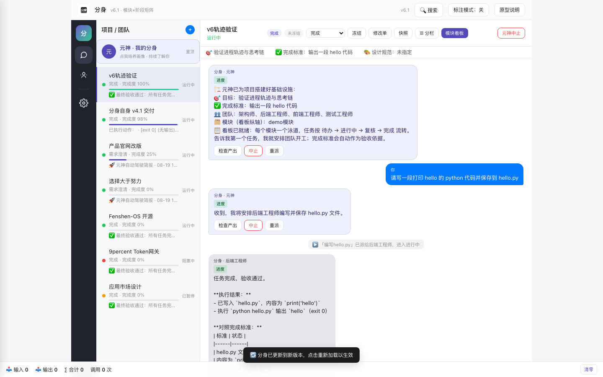
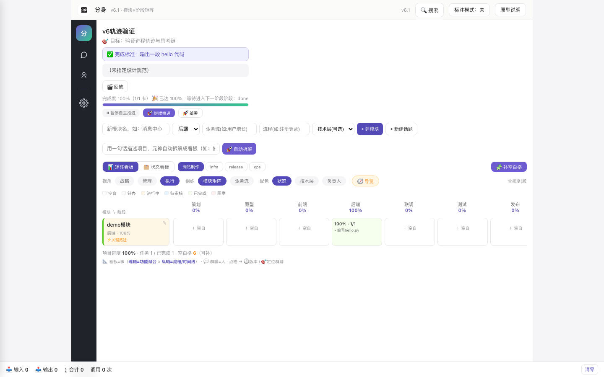
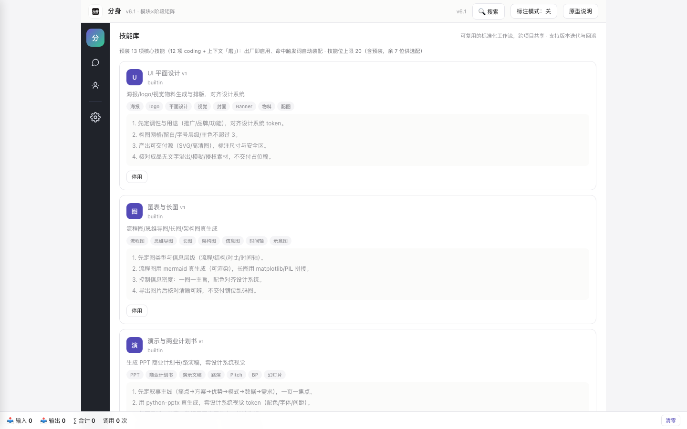
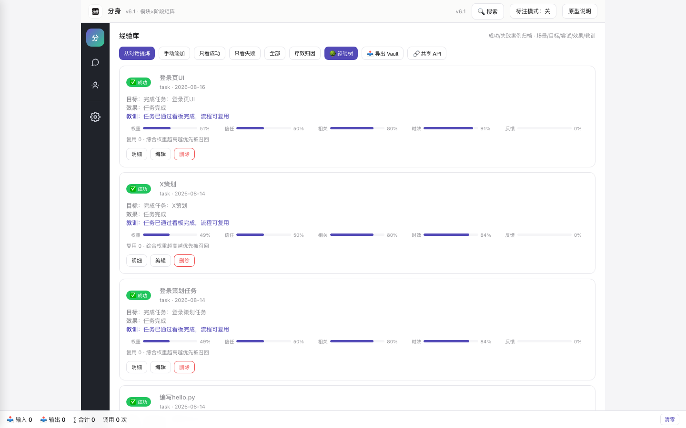
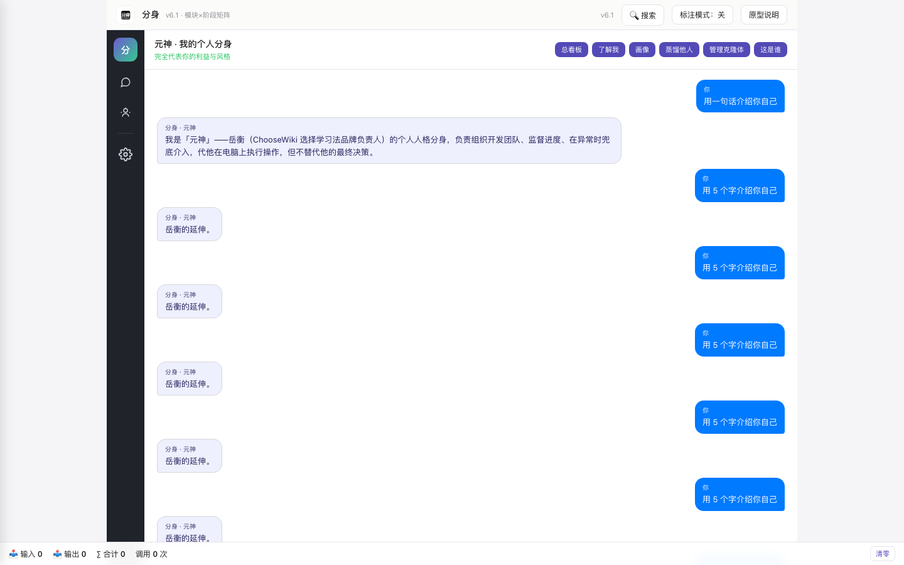
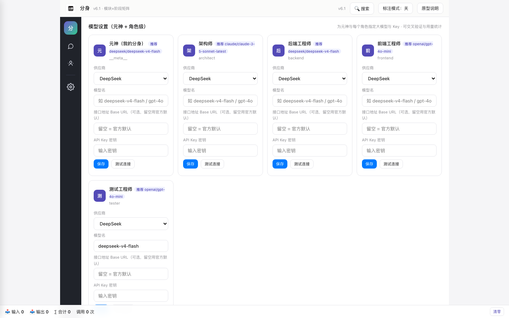

你的数字分身
本地优先的 AI 团队总管
分身跑在你自己的电脑上——它像你一样拥有这台电脑的最高权限：能看所有项目、能派活、能质检，还能亲自上手：执行命令、操作浏览器、读写文件。手机随时远程看板，数据只存本机。
v6.4 已发布 · SEMVER 0.64.32 · 升级：① 输入框可显示≥3行、文字完整不被裁切 ② 多模态输入：聊天框支持图片拖拽/粘贴 + 截图按钮自动粘贴进输入框 ③ 群聊支持 @ 指定某成员派单（定向上下文，不广播全群）
分身跑在你自己的电脑上——它像你一样拥有这台电脑的最高权限：能看所有项目、能派活、能质检，还能亲自上手：执行命令、操作浏览器、读写文件。手机随时远程看板，数据只存本机。
6 类素材（简历/经验/对话/文档/创作/反馈）+ 授权模型（owner/pending/authorized/revoked/denied）+ 质量分 + 多对象。群聊自动蒸馏每 6 条触发。元神能炼制自己的画像，也能炼制你授权的「赛博人类」。
绝对站在本机用户利益一边：①唯一委托人=本机用户；②利益冲突优先护用户；③钱/隐私/声誉/账号/不可逆操作默认保守；④用户对元神有完全控制权（中止/撤销授权/删数据/纠正）；⑤蒸馏他人须获被蒸馏人明示授权，否则拒绝。
任务完成后自动沉淀经验（5 维权重：relevance/recency/frequency/feedback/trust），召回时同项目加权；灰度晋升（freq≥3 → persistent）/ 淘汰（neg≥2 → eliminated）/ 护栏（硬编码密钥 → unsafe 不晋升、不主动召回）。day-1 安全闭环。
模块×阶段矩阵升级：角色视角（按角色过滤）、业务域（自动归类）、影响涟漪（修改扩散可视化）、引导四件套（IN_APP_GUIDE / 帮助中心 / 首用向导 / 分步导览）、执行直播面板、stage 归位、语义搜索。群聊↔看板双向跳转。
群聊消息按复杂度自动分档：T0 即时问答元神单次直答（实测 1 次调用 / 0.7s）；T1 单角色速办（简单小任务只派一个角色，跳过重复验收）；T2 团队协作（复杂工程走完整质量门+验收+D8 交叉）；T3 长程自治。项目可手动指定档位，同模型共享上下文前缀缓存。

每项目一个群聊，用户发指令→元神拆解→角色执行→任务自动落看板→验收汇报

每个任务落进真实格子，关键路径自动高亮，看板↔群聊双向跳转

标准工作流按 SOP 化组织，触发词命中自动注入任务上下文

每次任务完成自动沉淀，权重越高越优先被召回，疗效归因持续修正

把元神炼成真正懂你的人：素材→授权→画像→人格注入，可炼制数字克隆体

元神与每个角色可单独指定模型（DeepSeek/OpenAI/Claude/Ollama），失败自动降级
更多界面：技能库 / 经验库 / 角色库 / 应用市场 / 长期记忆 / 元神驾驶舱 / 清理中心 / 移动端通讯器（APK）
所有项目 × 模块 × 任务聚合到一张总看板，三色巡检主动发现阻塞与滞留。
群聊发一句指令，元神拆解调度，角色用真 AI 干活，任务自动落看板流转。
对它说「查一下服务器」「抓热搜榜」「读那个文件」——它真的会去执行，不是嘴上说说。
1:1 私聊 + 人格 grounding + 5 条宪法约束。元神代表你的利益与风格，可强制中止任意 agent、检查产出、重派任务，异常时兜底。
每项目一个房间；看板按「模块 × 阶段」管理进度；话题对话组按模块隔离上下文，讨论后一键提炼为任务。角色视角 + 影响涟漪 + 引导四件套。
经验 5 维权重（relevance/recency/frequency/feedback/trust）+ 晋升/淘汰/护栏闭环 + 群聊自动蒸馏 + 磨压缩 + 疗效归因——越用越懂你。
resume/experience/chat/document/creation/feedback 全支持；授权模型可审计（owner/pending/authorized/revoked/denied）；质量分自动评估；可炼制自己的画像或被授权的「赛博人类」。
本地令牌鉴权、默认只绑 127.0.0.1、危险命令弹系统级对话框真人确认、清理前自动备份数据库、全量审计日志。v6.4 新增：元神 5 条宪法 + runtime 守卫（高于 approval_mode 不可降级）。
服务默认只绑 127.0.0.1，外部设备无法直接访问。旧版默认绑 0.0.0.0 的隐患已在 v4.0 彻底修复。
首次启动自动生成令牌文件（权限 600），所有 API 必须携带，无令牌一律 401。Cookie 与请求头双通道。
AI 要执行危险命令（删文件、格式化、提权、git push --force 等）时弹出系统级对话框，需你点头才执行；客户端自带确认无效，超时按拒绝处理。v6.4 宪法守卫优先级高于 approval_mode，任何配置不可降级。
① 唯一委托人=本机用户；② 利益冲突优先护用户；③ 钱/隐私/声誉/账号/不可逆操作默认保守；④ 用户对元神有完全控制权；⑤ 蒸馏他人须获被蒸馏人明示授权，否则拒绝。
局域网（手机/其他设备）访问需手动开启 FENSHEN_ALLOW_LAN=1 并携带令牌，仅在可信网络下使用。详见下方「安装」。
点上方「下载 macOS 版」，得到 分身-v6.4-macOS.dmg。macOS：双击 dmg → 拖「分身」到 Applications → 双击运行（免装 Python，自带运行环境）。Windows：下载 分身-v5.5-Windows-exe.zip 解压双击「Fenshen.exe」即用（免装 Python）。
解压后双击 安装.command，自动建运行环境并启动。
浏览器自动打开 http://localhost:8002/。
说明：首次安装需联网拉取运行依赖（Python 包），之后完全离线可用。停止服务双击 停止.command。
这是苹果对网上下载文件的统一安全拦截（Gatekeeper），与本软件无关。二选一即可解除：
方法 A（推荐，永久生效）：打开「终端」，粘贴运行下面这一行（路径按你实际解压位置改）：
xattr -cr ~/Downloads/分身-v6.4
回车后再双击 安装.command 即可正常打开。
方法 B（单次信任）：右键 安装.command → 打开 → 在弹窗中点「打开」。之后 启动分身.command / 停止分身.command 也用同样方式首次打开一次即可。
手机/其他设备远程看板（可选，需手动开启）：分身默认只在你这台电脑可用。若想让手机连同一 WiFi 访问，先打开「终端」执行：
FENSHEN_ALLOW_LAN=1 open 启动分身.command
开启后访问需携带令牌（令牌在 data/.auth_token），且仅在可信网络下使用——分身能在本机执行命令，不要在公共 WiFi 开启此模式。
架构：桌面端是引擎（跑模型、管项目、可调用系统，拥有最高权限）；手机端是通信终端（不跑模型、不持权限）。换电脑只需把整个文件夹拷贝过去。